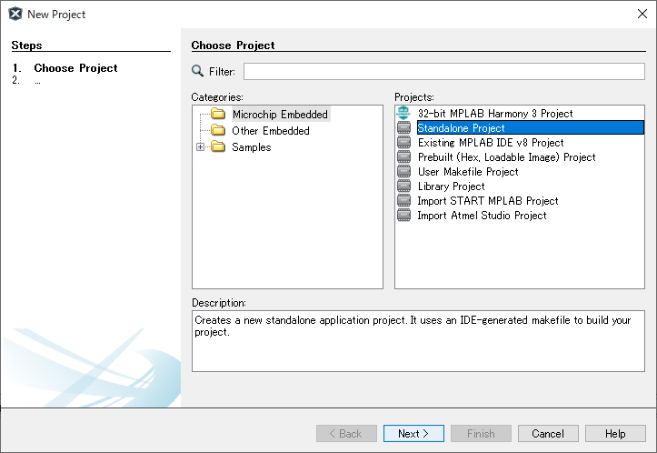
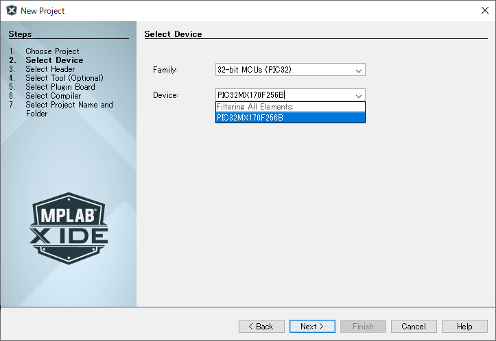
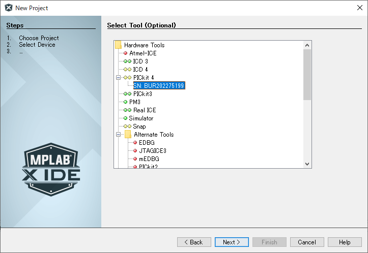
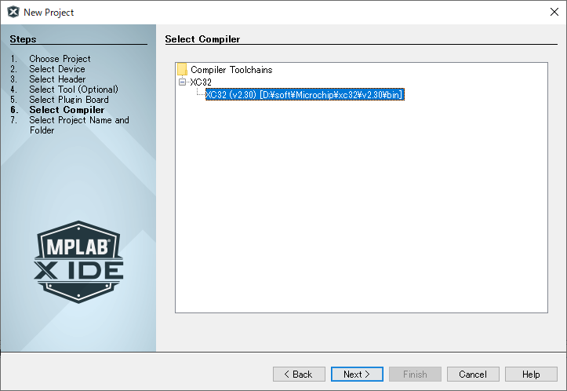
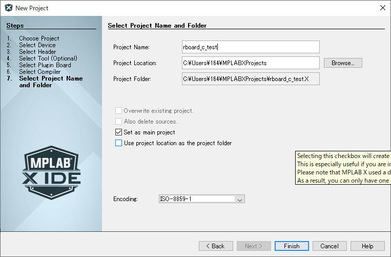
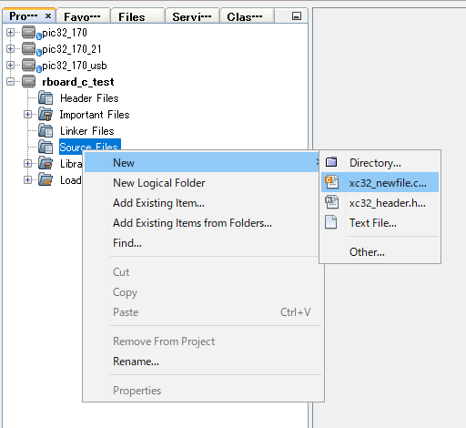
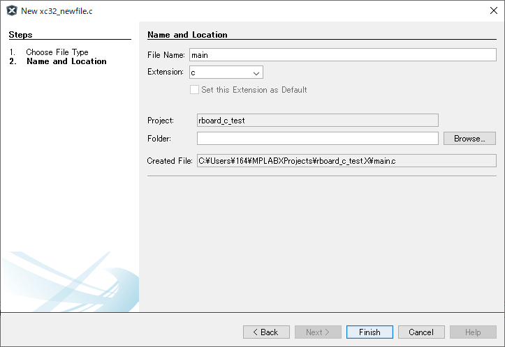
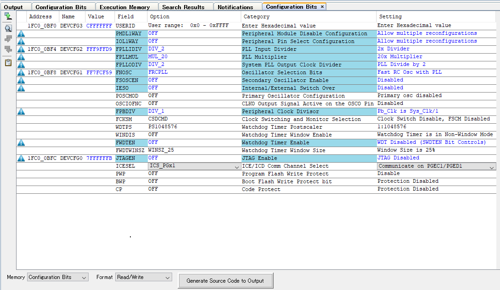
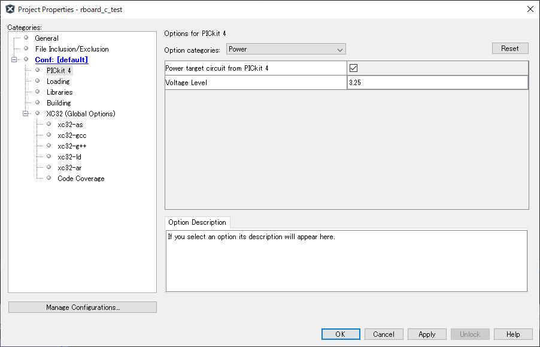

こちらを実行後、mruby/cでプログラムを書きたい場合は
アップデート手順を実行
準備
新しいプロジェクトを作成
- MPLAB Xを起動
- File ⇒ New Project…
- Standalone Projectを選択してNext >

- ↓画面のように変更(PIC32MX170F256B) Next >

- 使用しているライターを選択してNext >

- 使用するコンパイラ(XC32)を選択してNext >

- プロジェクト名を記入してFinich(ここではrboard_c_test)

作成したプロジェクトのSource Filesを右クリックし、New ⇒ xc32_newfile.c…を選択

- ファイル名にmainと記入してFinich

- main.cに書かれている内容はすべて消してください。
プログラムを書いていく
- Production ⇒ Set Configration Bitsを選択。
- 設定内容を以下のように変更後に下にあるGenerate Source Code to Outputボタンをクリック

- コードが出てくるのですべてコピーしてmain.cへ貼り付け
- その下に下記コードを貼り付け。(1秒間隔のLチカプログラム)
// ms delay
void delay(int t){
t = t*4000;
while(t>0) {t--;}
}
int main(void){
TRISA = 0x0;
TRISB = 0x0;
while(1){
// led1 on
PORTAbits.RA0 = 1;
delay(1000);
// led1 off
PORTAbits.RA0 = 0;
delay(1000);
}
return 0;
}
- Production → Set Project Configration → Custamize...
- Conf:[default] → PICkit3など → Power でチェックを入れる。

- Apply → OK
- 下記ボタンを押して書き込み